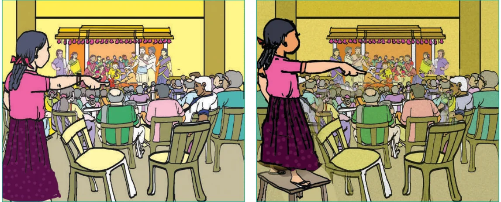
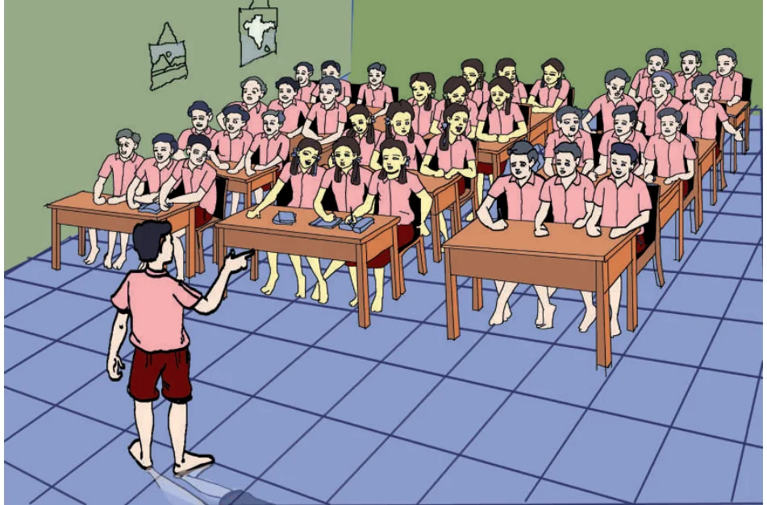
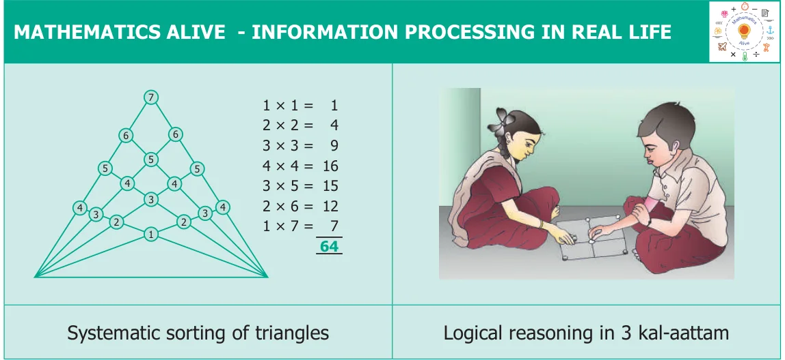

ChapterChapter
6
INFORMATION PROCESSINGINFORMATION PROCESSING
Learning Objectives
- ●To learn about systematic listing and counting.
- ●To solve puzzles like Sudoku and triangles by systematics completion.
Ponmozhi is at her cousin’s wedding which has a large gathering of people. There are a few hundred people, for sure. Suddenly her uncle comes and says, “We are getting ready to serve the meal; one of you quickly count the number of people and tell me”. “Ponmozhi, you are good at counting; Do this quickly and tell to me, I will be inside, getting the plantain leaves ready.”
It will be very tedious to count each and everyone assembled there. Ponmozhi is standing on a chair and is trying to count everyone. Suddenly, Ponmozhi is unsure of the count that she made and she did not want to count the same head more than once.
Ponmozhi was told that the task of counting was not easy. While counting, some people may leave, some may enter and some may move here and there. So it is difficult to make sure that her count would be correct.

But in a wedding feast it does not matter if there is a small error in the count: Whether there are 384 persons or 417 persons in the hall it does not really make much of a difference. Food made ready for 400 persons can be sufficient for 20 more persons. Mathematics will help not only in exact counting but also in estimation and approximate counting, depending on what is actually needed.
Instead of the above wedding hall situation, counting the number of children in the classroom is very easy. But counting the number of people in the wedding hall is difficult. There are many reasons for this.
The number of children in the classroom is small, in 10s rather than 100s. Children sit in the benches, the same number on each bench and the benches are organized in rows and columns. Children sit in one place when you are counting. The number is too small to ask the children to count starting from the left of the first row to the right of the last row, as the children themselves have collectively counted the number present in the class. But again we need not do this. If 3 children sit on each bench and there are 3 benches in a row and there are 4 rows, and every bench in the class is fully occupied, then we have \(3 \times 3 \times 4 = 36\) children in class. But what should we do if all benches are not occupied full? If there are 3 benches with only 2 children and one bench with only one child, we only need to subtract (3+2) from 36 to get 31 children in the class. Importantly, not only we can get the answer, but also we can be confident that everyone was counted, and that nobody was left uncounted or counted twice.
The absence of these factors makes counting in wedding halls more difficult. In general, we can say:

The place in which the things are counted is fixed and arranged in some order, then counting is easy, otherwise it is difficult.
This suggests that the things should be in order if it is needed to be counted easily.
